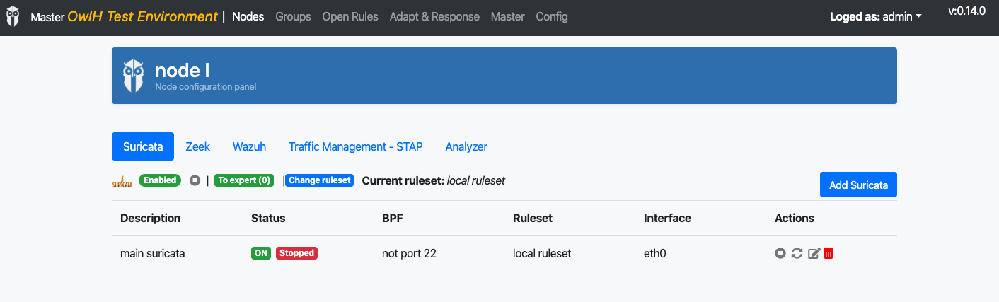

Suricata in trouble?¶
Suricata running?¶
from UI you can see it is enabled and not running
Process running¶
# ps -aux | grep suricata
root 5625 1 7 05:55 ? 00:00:02 suricata -D -c /etc/suricata/suricata.yaml -i eth0 -F /etc/suricata/bpf/9cf70176-59e8-aa42-40bd-f4f7ca281cca-filter.bpf --pidfile /var/run/suricata/9cf70176-59e8-aa42-40bd-f4f7ca281cca-pidfile.pid
Does Suricata load rules?¶
Check if suricata load rules when it start
# /usr/bin/suricata -i eth0 -c /etc/suricata/suricata.yaml -vvv | grep "signatured processed"
1/4/2020 -- 07:24:23 - <Info> - 18973 signatures processed. 1176 are IP-only rules, 6207 are inspecting packet payload, 13790 inspect application layer, 0 are decoder event only
You can run the command without grep for verbose output.
# /usr/bin/suricata -i eth0 -c /etc/suricata/suricata.yaml -vvv
Does Suricata create alerts?¶
Check alert events in your eve.json file
# tail -f /var/log/suricata/eve.json | grep `"event_type":"alert"`
{"timestamp":"2020-04-01T10:51:30.478227+0000","flow_id":1255158863546086,"in_iface":"eth0","event_type":"alert","src_ip":"31.3.245.133","src_port":80,"dest_ip":"172.31.41.217","dest_port":44728,"proto":"TCP","alert":{"action":"allowed","gid":1,"signature_id":2100498,"rev":7,"signature":"GPL ATTACK_RESPONSE id check returned root","category":"Potentially Bad Traffic","severity":2},"app_proto":"http","payload":"SFRUUC8xLjEgMjAwIE9LDQpTZXJ2ZXI6IG5naW54LzEuMTYuMQ0KRGF0ZTogV2VkLCAwMSBBcHIgMjAyMCAxMDo1MTozNCBHTVQNCkNvbnRlbnQtVHlwZTogdGV4dC9odG1sOyBjaGFyc2V0PVVURi04DQpDb250ZW50LUxlbmd0aDogMzkNCkNvbm5lY3Rpb246IGtlZXAtYWxpdmUNCkxhc3QtTW9kaWZpZWQ6IEZyaSwgMTAgSmFuIDIwMjAgMjE6MzY6MDIgR01UDQpFVGFnOiAiMjctNTliY2ZlOTkzMmMzMiINCkFjY2VwdC1SYW5nZXM6IGJ5dGVzDQoNCnVpZD0wKHJvb3QpIGdpZD0wKHJvb3QpIGdyb3Vwcz0wKHJvb3QpCg==","payload_printable":"HTTP\/1.1 200 OK\r\nServer: nginx\/1.16.1\r\nDate: Wed, 01 Apr 2020 10:51:34 GMT\r\nContent-Type: text\/html; charset=UTF-8\r\nContent-Length: 39\r\nConnection: keep-alive\r\nLast-Modified: Fri, 10 Jan 2020 21:36:02 GMT\r\nETag: \"27-59bcfe9932c32\"\r\nAccept-Ranges: bytes\r\n\r\nuid=0(root) gid=0(root) groups=0(root)\n","stream":1,"packet":"Dt8rrqqUDqXY+b1cCABFAAA0Zy5AACoG\/xQfA\/WFrB8p2QBQrrgnSkD1NyXWA4ARAONxyAAAAQEICsUcWO8TCsQI","packet_info":{"linktype":1}}